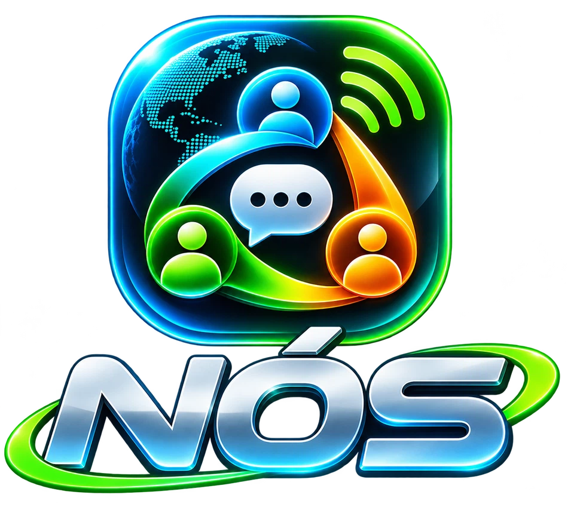

Mensagens
Conversas individuais e grupos, texto, arquivos, fotografias e notas de voz gravadas, aproveitando a tecnologia de comunicação Mesh do Knit.
O NÓS reúne um mensageiro privado e uma experiência de rádio walkie-talkie. Duas formas de conversar, no mesmo aplicativo — até quando não há internet, desde que os aparelhos estejam ao alcance da rede compatível.

Escolha a maneira de se comunicar sem perder a experiência de mensagens e áudios gravados.
Conversas individuais e grupos, texto, arquivos, fotografias e notas de voz gravadas, aproveitando a tecnologia de comunicação Mesh do Knit.
Canais de voz com botão de apertar para falar e senha compartilhada, usando Wi-Fi local ou hotspot compatível — sem exigir internet.
Bluetooth e Wi-Fi usam ondas de rádio. No NÓS, as mensagens Mesh e os canais de voz ao vivo são sistemas separados, com alcances e requisitos diferentes.